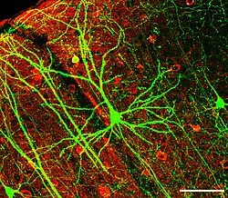
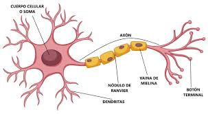

La neurona (del griego νεῦρον neûron, ‘cuerda’, ‘nervio’)[1] es una célula que constituye la unidad anatomofuncional del sistema nervioso cuya principal función es recibir, procesar y transmitir información a través de señales químicas y eléctricas gracias a la excitabilidad eléctrica de su membrana plasmática. Están especializadas en la recepción de estímulos y conducción del impulso nervioso (en forma de potencial de acción) entre ellas mediante conexiones llamadas sinapsis, o con otros tipos de células como, por ejemplo, las fibras musculares. Altamente diferenciadas, la mayoría de las neuronas no se dividen una vez alcanzada su madurez; no obstante, una minoría sí lo hace.[2] Las neuronas presentan unas características morfológicas típicas que sustentan sus funciones: un cuerpo celular, llamado soma o «pericarion» central; una o varias prolongaciones cortas periféricas que generalmente transmiten impulsos hacia el soma celular, denominadas dendritas; y una prolongación larga centrífuga, denominada axón o «cilindroeje», que conduce los impulsos desde el soma hacia otra neurona o hacia otra célula objetivo.[3] La neurogénesis en seres adultos fue descubierta apenas en el último tercio del siglo XX. Hasta hace pocas décadas se creía que, a diferencia de la mayoría de las otras células del organismo, las neuronas normales en el individuo maduro no se regeneraban, excepto las células olfatorias. Los nervios mielinizados del sistema nervioso periférico también tienen la posibilidad de regenerarse a través de la utilización del neurolema,[cita requerida] una capa formada de los núcleos de las células de Schwann.
Wilhelm Waldeyer fue uno de los fundadores de la teoría de la neurona, acuñando el término “neurona” para describir la unidad celular de la función del sistema nervioso y declarando y clarificando ese concepto en 1891.[4] A fines del siglo XIX Santiago Ramón y Cajal situó por primera vez las neuronas como elementos funcionales del sistema nervioso.[5] Cajal propuso que actuaban como entidades discretas que, intercomunicándose, establecían una especie de red mediante conexiones especializadas o espacios.[5] Esta idea es reconocida como la doctrina de la neurona, uno de los elementos centrales de la neurociencia moderna. Se opone a la defendida por Camillo Golgi, que propugnaba la continuidad de la red neuronal y negaba que fueran entes discretos interconectados. A fin de observar al microscopio la histología del sistema nervioso, Cajal empleó tinciones de plata (con sales de plata) de cortes histológicos para microscopía óptica, desarrollados por Golgi y mejorados por él mismo. Dicha técnica permitía un análisis celular muy preciso, incluso de un tejido tan denso como el cerebral.[6] La neurona es la unidad estructural y funcional del sistema nervioso. Recibe los estímulos provenientes del medio ambiente, los convierte en impulsos nerviosos y los transmite a otra neurona, a una célula muscular o glandular donde producirán una respuesta. Doctrina de la neurona Artículo principal: Doctrina de la neurona Micrografía de neuronas del giro dentado de un paciente con epilepsia teñidas en negro mediante la tinción de Golgi, empleada en su momento por Golgi y por Cajal. La doctrina de la neurona, establecida por Santiago Ramón y Cajal a finales del siglo XIX, es el modelo aceptado hoy en neurofisiología. Consiste en aceptar que la base de la función neurológica radica en las neuronas como entidades discretas, cuya interacción, mediada por sinapsis, conduce a la aparición de respuestas complejas. Cajal no solo postuló este principio, sino que lo extendió hacia una «ley de la polarización dinámica», que propugna la transmisión unidireccional de información (esto es, en un solo sentido, de las dendritas hacia los axones).[7] No obstante, esta ley no siempre se cumple. Por ejemplo, las células gliales pueden intervenir en el procesamiento de información,[8] e, incluso, las efapsis o sinapsis eléctricas, mucho más abundantes de lo que se creía,[9] presentan una transmisión de información directa de citoplasma a citoplasma. Más aún: las dendritas pueden dirigir una señal sináptica de forma centrífuga al soma neuronal, lo que representa una transmisión en el sentido opuesto al postulado,[10] de modo que sean los axones los que reciban información (aferencia).

Una neurona típica consta de: un núcleo voluminoso central, situado en el soma; un pericarion que alberga los orgánulos celulares típicos de cualquier célula eucariota; y neuritas (esto es, generalmente un axón y varias dendritas) que emergen del pericarion.[3] Infografía de un cuerpo celular del que emergen multitud de neuritas. Núcleo Artículo principal: Núcleo celular Situado en el cuerpo celular de la neurona, suele ocupar una posición central y es muy visible, especialmente en las neuronas pequeñas. Contiene uno o dos nucléolos prominentes, así como una cromatina dispersa, lo que da idea de la relativamente alta actividad transcripcional de este tipo celular. La envoltura nuclear, con multitud de poros nucleares, posee una lámina nuclear muy desarrollada. Entre ambos puede aparecer el cuerpo accesorio de Cajal, una estructura esférica de en torno a 1 μm de diámetro que corresponde a una acumulación de proteínas ricas en los aminoácidos arginina y tirosina. Pericarion Artículo principal: Pericarion Diversos orgánulos llenan el citoplasma que rodea al núcleo. El orgánulo más notable, por estar el pericarion lleno de ribosomas libres y adheridos al retículo rugoso, es la llamada sustancia de Nissl; al microscopio óptico, se observan como grumos basófilos, y, al electrónico, como apilamientos de cisternas del retículo endoplasmático. Tal abundancia de los orgánulos relacionados en la síntesis proteica se debe a la alta tasa biosintética del pericarion. Estos son particularmente notables en neuronas motoras somáticas, como las del cuerno anterior de la médula espinal o en ciertos núcleos de nervios craneales motores. Los cuerpos de Nissl no solamente se hallan en el pericarion sino también en las dendritas, aunque no en el axón, y es lo que permite diferenciar dendritas de axones en el neurópilo. El aparato de Golgi, que se descubrió originalmente en las neuronas, es un sistema muy desarrollado de vesículas aplanadas y agranulares pequeñas. Es la región donde los productos de la sustancia de Nissl posibilitan una síntesis adicional. Hay lisosomas primarios y secundarios (estos últimos, ricos en lipofuscina, pueden marginar al núcleo en individuos de edad avanzada debido a su gran aumento).[11] Las mitocondrias, pequeñas y redondeadas, poseen habitualmente crestas longitudinales. En cuanto al citoesqueleto, el pericarion es rico en microtúbulos (clásicamente, de hecho, denominados neurotúbulos, si bien son idénticos a los microtúbulos de células no neuronales) y filamentos intermedios (denominados neurofilamentos por la razón antes mencionada).[12] Los neurotúbulos se relacionan con el transporte rápido de las moléculas de proteínas que se sintetizan en el cuerpo celular y que se llevan a través de las dendritas y el axón.[13] Dendritas Artículo principal: Dendrita Las dendritas son ramificaciones que proceden de la soma neuronal que consiste en proyecciones citoplasmáticas envueltas por una membrana plasmática sin envoltura de mielina. En ocasiones poseen un contorno irregular, desarrollando espinas. Sus orgánulos y componentes característicos son: muchos microtúbulos y pocos neurofilamentos, ambos dispuestos en haces paralelos; además muchas mitocondrias; grumos de Nissl, más abundantes en la zona adyacente al soma; retículo endoplasmático liso, especialmente en forma de vesículas relacionadas con la sinapsis. Axón Artículo principal: Axón El axón es una delgada y extensa prolongación del soma neuronal, que está rodeado por su membrana el axolema. El axolema puede estar recubierto por células de Schwann en el sistema nervioso periférico de vertebrados, con producción o no de mielina. Puede dividirse, de forma centrífuga al pericarion, en tres sectores: el cono axónico, el segmento inicial y el resto del axón.[3] Cono axónico. Adyacente al pericarion, es muy visible en las neuronas de gran tamaño. En él se observa la progresiva desaparición de los grumos de Nissl y la abundancia de microtúbulos y neurofilamentos que, en esta zona, se organizan en haces paralelos que se proyectarán a lo largo del axón. Segmento inicial del axón (AIS). En él comienza la mielinización externa. En el citoplasma, a esa altura se detecta una zona rica en material electrondenso en continuidad con la membrana plasmática, constituido por material filamentoso y partículas densas. La membrana se continúa con el axolema y se asume que este sector interviene en la generación del potencial de acción que transmitirá la señal sináptica.[14] En cuanto al citoesqueleto, esta zona posee la organización propia del resto del axón. Los microtúbulos, ya polarizados, poseen la proteína τ,[15] pero no la proteína MAP-2. Resto del axón. En esta sección comienzan a aparecer los nódulos de Ranvier y las sinapsis.
.jpg)
El sistema nervioso procesa la información siguiendo un circuito más o menos estándar. La señal se inicia cuando una neurona sensorial recibe un estímulo externo. Su axón se denomina fibra aferente. Esta neurona sensorial transmite una señal a otra aledaña, de modo que acceda un centro de integración del sistema nervioso del animal. Las interneuronas, situadas en dicho sistema, transportan la señal a través de sinapsis. Finalmente, si debe existir respuesta, se excitan neuronas eferentes que controlan músculos, glándulas u otras estructuras anatómicas. Las neuronas aferentes y eferentes, junto con las interneuronas, constituyen el circuito neuronal.[27] Las señales eléctricas no constituyen en sí mismas información, la neurociencia actual ha descartado que las neuronas básicamente sean algo así como líneas telefónicas de transmisión. Esas señales eléctricas en cambio caracterizan el estado de activación de una neurona. Las neuronas se agrupan dentro de circuitos neuronales y la señal eléctrica, que propiamente es un potencial eléctrico, de una neurona se ve afectada por las neuronas del circuito a las que está conectada. El estado de una neurona dentro de un circuito neuronal cambia con el tiempo y se ve afectada por tres tipos de influencias, las neuronas excitadoras del circuito neuronal, las neuronas inhibidores del circuito neuronal y los potenciales externos que tienen su origen en neuronas sensoriales. La función de un determinado grupo de neuronas es alcanzar un determinado estado final en función de los estímulos externos. Por ejemplo, en la percepción del color, un grupo de neuronas puede encargarse de acabar en un determinado estado si el estímulo es "rojo" y otro determinado estado si el estímulo es "verde". El número de "estados estables" posibles del circuito neuronal se corresponde con el número de patrones (en este caso colores diferentes) que puede reconocer el circuito neuronal. Los trabajos de Freeman en los años 1990 aclararon que un determinado grupo de neuronas sigue un patrón de evolución temporal caótico hasta alcanzar un determinado estado.[28] Un estado estable se corresponde con el reconocimiento de un patrón, a nivel microscópico el estado estable es un patrón de activación neuronal dentro de determinado circuito, en el que el potencial de activación está cerca de un atractor extraño de la neurodinámica del grupo. El número de patrones p reconocibles por un número de neuronas se puede relacionar con el número de neuronas que forman el grupo y la probabilidad de error en el reconocimiento de dicho patrón. Las personas más hábiles o más entrenadas en una tarea ejecutan la misma tarea con mucha mayor precisión porque tienen un mayor número de neuronas encargadas de dicha tarea (la repetición espaciada de una actividad refuerza las sinapsis y el número de neuronas potencialmente involucradas en esa tarea). La teoría de Hopfiled y la regla de Hebb estiman la relación entre el número de neuronas N que intervienen en reconocer p patrones y la probabilidad de error Pe en el reconocimiento de patrones.
Donde e r f ( ) {\displaystyle \scriptstyle \mathrm {erf} ()} es la llamada función error asociada a la curva de Gauss. Esta ecuación refleja que un pianista profesional o un deportista de élite ejecuta con una probabilidad de error muy pequeña determinada tarea porque su entrenamiento hace que un mayor número de neuronas N esté involucrada en dicha tarea y eso minimiza mucho la probabilidad de error. El aprendizaje se da cuando por efecto de los patrones de activación reiterados, las conexiones neuronales sufren una reestructuración: ciertas conexiones sinápticas se refuerzan mientras otras conexiones sinápticas se debilitan. El conocimiento que un individuo tiene del mundo se refleja en la estructura de estas conexiones. A su vez el número y el tipo de conexión determina el número de atractores disponibles de la neurodinámica de un circuito y por tanto el número de patrones diferentes que dicho circuito puede identificar. Igualmente el olvido y la pérdida de capacidad tienen igualmente una base fisiológica en el debilitamiento de sinapsis raramente usadas. Cuando un determinado circuito neuronal se activa poco sus sinapsis decaen y pueden llegar a perderse por lo cual el reconocimiento de cierto patrón puede desaparecer.
Existen dos hipótesis acerca del origen filogenético de las neuronas. La primera, denominada hipótesis monofilética, postula que las neuronas se originaron en un phylum y a partir de ahí fueron evolucionando hacia formas más complejas. La segunda o hipótesis polifilética, propone que las neuronas se originaron de forma independiente en más de un phylum, en concreto en dos de ellos: los cnidarios y los ctenóforos, por lo que el desarrollo posterior sería un ejemplo de evolución convergente.[34] En los cnidarios más primitivos, los hidrozoos, se ha descrito una actividad similar a la neural no originada por neuronas, sino por cierto tipo de comunicación entre células epiteliales. En los poríferos las membranas externas poseen células capaces de contraerse como respuesta a cambios de presión o de composición del agua. Estas células responden a estímulos específicos y son contráctiles, por lo que se puede considerar que desempeñan funciones sensitivas y motoras. A este tipo de células se les ha denominado neuroides. De igual manera, actos motores de ciertos pólipos como lo son cerrar y mover sus tentáculos y ventosas provienen de potenciales eléctricos que se propagan de una célula a otra en la capa epitelial de rostral a caudal. En este sentido, hay que recordar que en los embriones de los vertebrados las células neurales proceden de células epiteliales a través del proceso denominado neurulación. Todo esto hace pensar que las células nerviosas se diferenciaron en los primeros metazoos por una transformación gradual de células epiteliales (que en los sistemas primitivos desempeñaron una función de iniciadoras de actividad transmisible a células adyacentes) hacia células neuroepiteliales sensibles a estímulos mecánicos, electromagnéticos y químicos, que trasducirían en señales eléctricas y químicas capaces te desarrollar una respuesta ágil y autónoma ante determinados estímulos del medio.[34] Tras la aparición de la neurona, el siguiente paso evolutivo consiste en la aparición del tejido nervioso. En los primeros animales consistía en una red nerviosa difusa similar a la que presentan las hidras o los corales, en la que la información viaja en todas direcciones sin un patrón reconocible. Más adelante aparecerá el sistema nervioso ganglionar en los anélidos. La agrupación de neuronas en ganglios hace posible un intercambio más rápido entre neuronas y un mayor grado de integración de la información, y sobre todo a la direccionalidad de los impulsos nerviosos, lo que da lugar conductas más eficientes. Estos ganglios se distribuyen en los metámeros, alcanzando un mayor protagonismo aquellos que procesan información del exterior y la envían a los músculos y las glándulas. El tamaño de los ganglios que desarrollan una mayor actividad va aumentando. Se trata de los situados en la zona cercana a la boca, ya que ésta es la que durante la locomoción entra antes en contacto con el mundo exterior. Surge la recepción a distancia de los estímulos ambientales, y paralelamente empiezan a aparecer las interneuronas, células que reciben y envían información exclusivamente a otras células nerviosas. La importancia que para la supervivencia tiene la función de los ganglios rostrales hace que se conviertan en organizadores de la actividad de los demás ganglios. Este proceso recibe el nombre de encefalización, y alcanzará su mayor grado de desarrollo por primera vez en los artrópodos y moluscos, junto con un desarrollo notable de los órganos de los sentidos y de apéndices articulados que hacen posible la locomoción. Con este cerebro elemental, surge junto a las capacidades de aprendizaje, memoria y comportamiento social, una característica fundamental que es la predicción de eventos futuros.[S